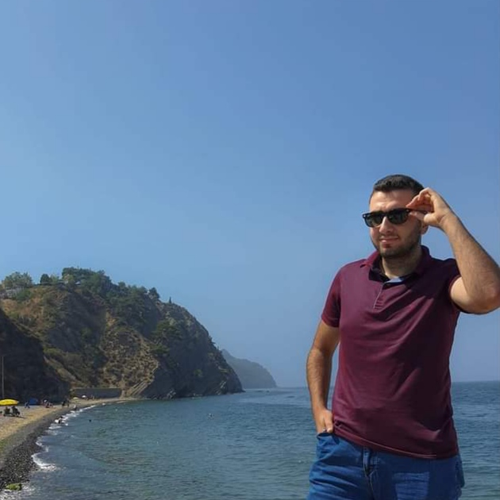

Ayhan Usta
Elektrik-Elektronik Mühendisliği Öğrencisi
Gömülü Sistemler (STM32, ESP32) & DIY Projeler Üzerine Çalışmalar Yapıyorum
Sosyal Medya ve İletişim Kanalları
GitHub
LinkedIn
İnstagram
Threads
YouTube
E-Posta Gönder
Projeler & Yapılan Çalışmalar
LumiAcces - Akıllı Kapı Güvenlik Sistemi
Restoran Adisyon ve Sipariş Otomasyonu
DIY Force Feedback Direksiyon Seti
Donanım İnceleme & Onarım Videoları